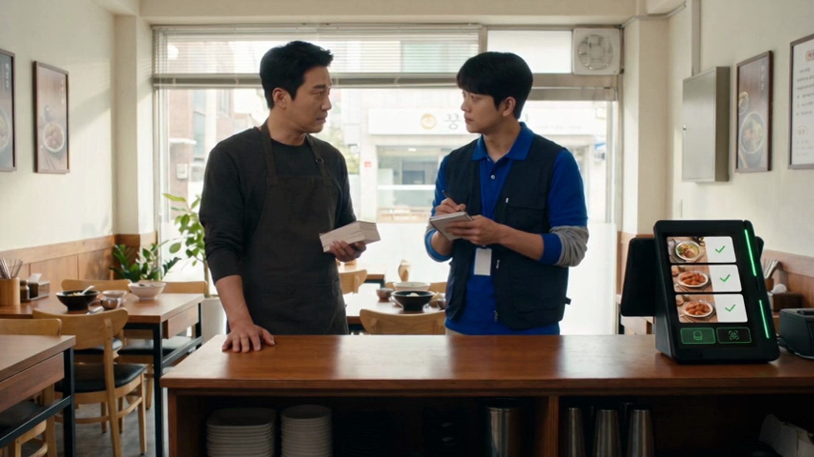

단말기 기사단 5화 — 아무한테나 주면 아무도 안 옵니다
"쿠폰을 삼백 장 돌렸는데 여덟 명 왔어요."
3화에서 일곱 번을 찾아갔던 그 골목입니다. 이번엔 국숫집 사장님이 부르셨습니다.
전단을 인쇄하고, 문 앞에서 나눠 주고, 배달 봉투에도 넣으셨다고 합니다.
그렇게 삼백 장을 돌렸는데 돌아온 건 여덟 명이었다고요.
사장님은 이렇게 말씀하셨습니다. 이 동네는 쿠폰이 안 먹히나 보다고요.
저는 다르게 봤습니다.
쿠폰이 안 먹힌 게 아니라, 그 쿠폰을 받은 삼백 명 중에
다시 오실 분이 몇 분이었느냐는 겁니다.
사장님도 잠깐 생각하시더니 말씀하셨습니다. 모르는 사람들이었죠, 라고요.
한 번도 안 와 본 분께 할인을 드리면 그날 한 번 오십니다.
할인이 있어서 오신 것이니, 할인이 끝나면 오실 이유도 같이 끝납니다.
다시 오게 하는 건 할인이 아니라 기억입니다.
그 가게가 어땠는지, 국수가 어땠는지, 그날 기분이 어땠는지.
전단 한 장은 그 기억을 만들어 드리지 못합니다.
지난달에 다녀가신 분, 두 번 오신 분, 늦은 시간에만 오시는 분.
그분들은 이미 이 가게를 아십니다. 위치도, 맛도, 자리도 아십니다.
그러니 설득할 것이 없습니다. 이유 하나만 있으면 오십니다.
삼백 장을 돌리는 것보다, 이미 아는 얼굴 쪽을 먼저 보는 편이 가깝습니다.
누가 언제 무엇을 얼마나 자주 드셨는지를
사장님이 손님 얼굴마다 기억하실 수는 없습니다. 그럴 시간도 없으시고요.
그런데 그 내용은 이미 계산대에 남아 있습니다.
외워야 하는 것이 아니라, 이미 적혀 있던 것을 안 보고 계셨던 겁니다.
네이버페이 커넥트는 결제 데이터로 취향을 읽어
쿠폰·적립·맞춤 혜택을 자동으로 붙입니다.
스마트플레이스 쿠폰도 여기서 이어집니다.
사장님이 전단을 인쇄하거나 문 앞에 서 계시지 않아도 됩니다.
쓰시던 방식을 크게 바꿔 드린 것도 아닙니다. 계산대는 그대로 두었습니다.
몇 명이 늘었는지 여쭤보지 않았고, 사장님도 말씀하지 않으셨습니다.
대신 이런 말씀을 하셨습니다. 요즘은 아는 얼굴이 좀 늘었다고요.
저희가 약속드릴 수 있는 것은 여기까지입니다.
손님을 몇 명 더 오게 해 드리겠다는 말씀은 드리지 못합니다.
다만 이미 다녀가신 분께 이유 하나를 다시 건네는 자리는 만들어 드릴 수 있습니다.
🗣 실제 사장님 이야기
"쿠폰을 커넥트에 연동해두니 손님이 알아서 다시 찾아오고,
기기가 가로·세로 다 놓을 수 있어 좁은 카운터에도 딱 맞았어요."
— 박00 · 음식점 대표
(출처: 네이버페이 공식 이용후기)
다음 화 — 6화 「문을 닫는 날에도 기사단은 갑니다」
네이버단말기(Npay 커넥트)는 결제가 끝난 자리에서
네이버 리뷰·쿠폰·적립이 이어지는 스마트 사인패드입니다.
쓰던 포스는 그대로 두고 연결만 합니다.
· 상담 문의 · A/S 접수 — 평일 9시~20시 / 토·일·공휴일 11시~17시
· 정품 신제품 보증 · 수도권 직영 설치
누리네트웍스 · 결제는 더 쉽게, 매장은 더 스마트하게
🔗 https://nwpos.co.kr?utm_source=youtube&utm_medium=social&utm_campaign=daily7&utm_content=drama5
#단말기기사단 #웹드라마 #쿠폰 #단골관리 #재방문 #스마트플레이스 #네이버커넥트 #Npay커넥트 #네이버단말기 #네이버페이단말기 #포인트적립 #쿠폰적립 #결제단말기 #카드단말기 #포스기 #포스 #간편결제 #매장운영 #매장관리 #자영업 #소상공인 #자영업노하우 #개인사업자 #가맹점 #창업준비 #누리포스 #누리네트웍스 #Shorts
[SNS아이콘]
[SNS배너]